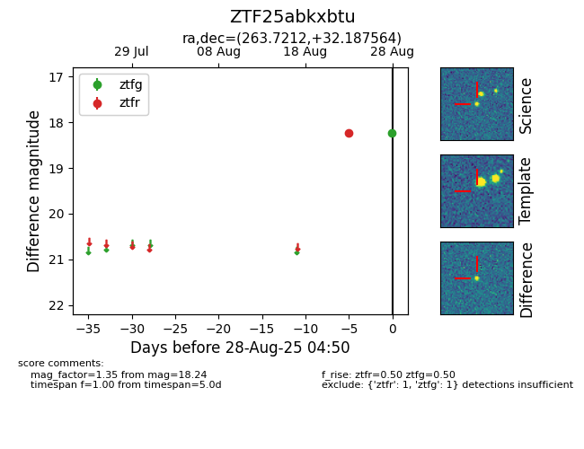

Target ZTF25abkxbtu at 2025-08-28 04:50, see:
FINK: fink-portal.org/ZTF25abkxbtu
Lasair: lasair-ztf.lsst.ac.uk/objects/ZTF25abkxbtu
ALeRCE: alerce.online/object/ZTF25abkxbtu
alt names
ZTF25abkxbtu (ztf,fink)
coordinates:
equatorial (ra, dec) = (263.7212,+32.18756)
galactic (l, b) = (56.4274,+29.32985)
photometry
last ztfg=18.24, ztfr=18.24
1 ztfg, 1 ztfr detections
